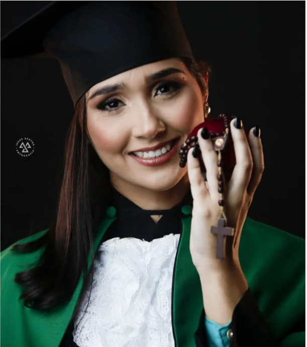

Larissa Midlej | Nutricionista


Atuo na área da Nutrição desde 2022, com foco em emagrecimento saudável e sustentável. Acredito que cuidar da alimentação não precisa significar abrir mão do prazer de comer ou seguir dietas extremamente restritivas. Meu propósito é acompanhar você de forma individualizada, respeitando sua rotina, suas necessidades e seus objetivos.
Ao longo dessa jornada, busco ajudar você a desenvolver uma relação mais equilibrada com a alimentação, construindo hábitos que possam ser mantidos no dia a dia e contribuam não apenas para o emagrecimento, mas também para mais saúde, disposição e qualidade de vida.
Meu objetivo é tornar o processo mais leve, possível e duradouro, para que você conquiste seus resultados e aprenda a cuidar de si de forma consciente e sustentável.
